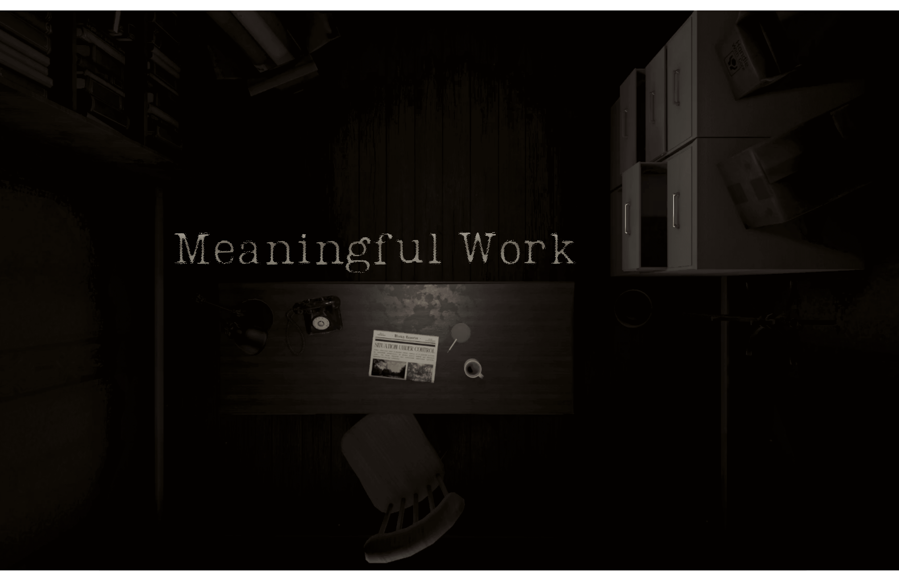
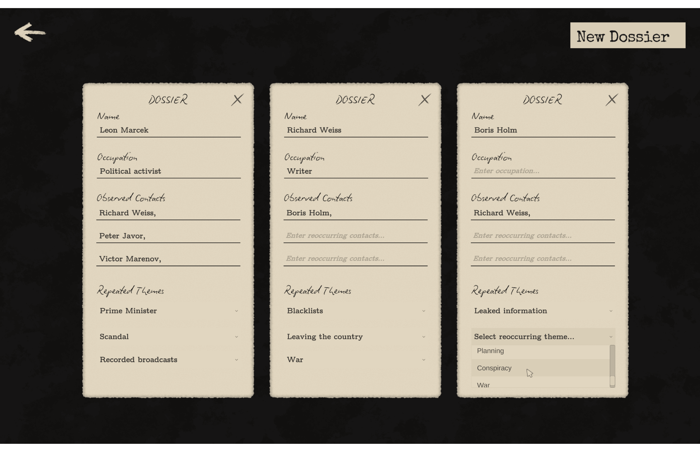
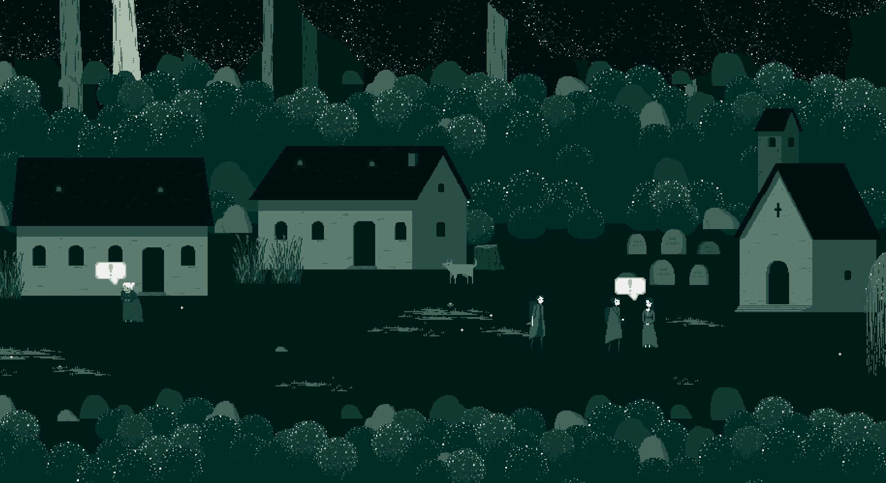
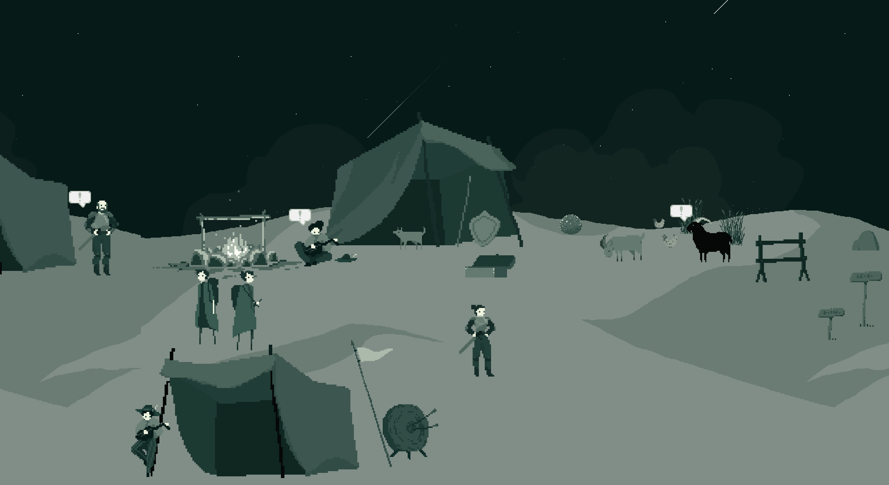
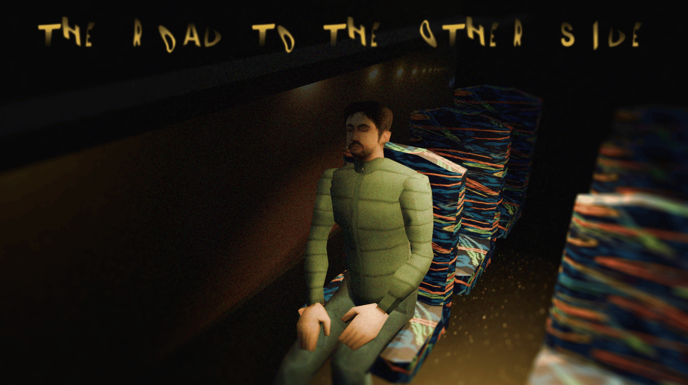
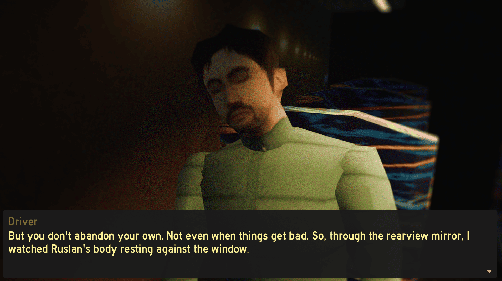
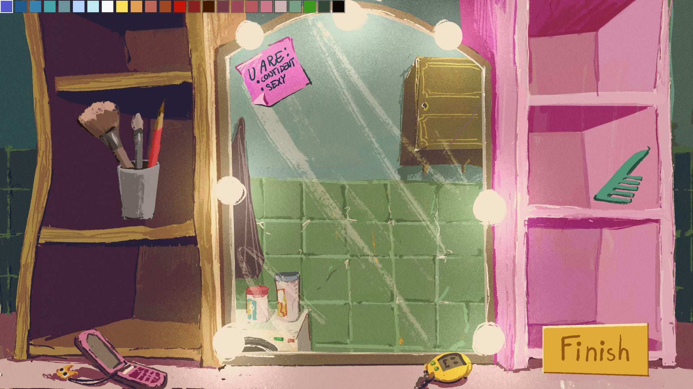
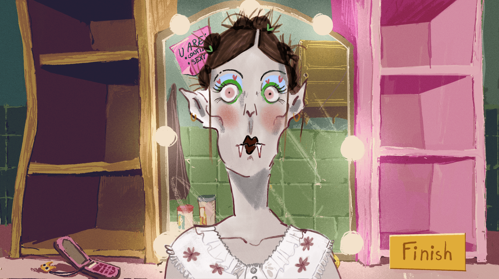

About me
I'm a master's student in the Game Design program at FAMU, with a background in film theory and history that influences how I approach storytelling in interactive media. Alongside my studies, I've spent the past 3 years working as a QA tester, gaining hands-on experience with the software development lifecycle and learning how to build user-friendly systems.
As a game designer, I am focused on designing story-driven player experiences. I'm interested in how mechanics, exploration, environmental storytelling, and player discovery can communicate narrative without relying on exposition.
My Areas of Focus
Narrative Design
Creating stories that are communicated through gameplay systems, player choices, and interactive elements.
Investigation & Discovery
Designing experiences where players uncover information by examining details, connecting clues, and forming their own conclusions.
Atmospheric Design
Using mechanics, pacing, sound, and environmental details to shape player experiences.
My Projects
Meaningful Work
Visual Novel · University Project
My role: Game design, narrative design, writing, scripting, sound design


This is my first major university project. Here, players take on the role of a postal censor, reading and redacting letters under a totalitarian regime. They have an ever-growing set of rules, which they can enforce or subtly subvert by leaving out clues that help revolutionaries organize a resistance.
This means that choices are not presented to the player explicitly, but each censored or uncensored paragraph defines the outcome and the player's character.
Goals
I worked solo on this project, with my main focus on narrative design. My goal was to create an atmospheric, immersive experience that challenges players' moral judgment while building a cohesive story and rich world through fragmented storytelling.
By piecing together small fragments of information scattered throughout the letters, players gradually uncover the truth about the world around them. From behind their desk, they influence events without ever directly participating in them. Exploring that quiet, invisible power of censorship was one of the project's central themes.
I was also aiming to realistically portray the absurdity of a totalitarian regime: the contradictions within its rules and their overwhelming complexity. Most of the censorship regulations featured in the game are based on real examples. Some were enforced by historical regimes, while others continue to exist today.


Gameplay Design
The gameplay revolves around two core activities: censoring letters and building dossiers.
The dossier system adds a detective element, driven by the protagonist's growing curiosity about the lives of the people whose correspondence they read. The dossier system was designed to transform passive reading into active investigation.
Players must recognize patterns, connect people and events, and gradually uncover an expanding conspiracy.
The two hidden variables were designed to create tension between the protagonist's personal and broader societal consequences, encouraging players to balance on the edge of doing a good enough job to stay safe while affecting the revolutionaries' resistance in a desirable way.
Players are never told which choices are "correct"; instead, they must interpret the rules of the regime and decide how much risk they are willing to take.


The Gift
Point & Click · Solo Project
My role: Game design, narrative design, writing, scripting, sound design


A dark folklore Point & Click adventure. Two lovers embark on a journey to find a cure for the husband's mysterious illness. Conventional medicine has failed, and with hope dwindling, the doctor urges them to seek remedies buried deep in the countryside — the kind medicine doesn't recognize.
Goals
This was my first solo project, and I used it to explore how every available tool — not just the writing — could build character and theme. I wanted a folklore setting that felt lived-in and unsettling, and a story where the mechanics themselves supported the emotional weight.
The player controls Mina, who must protect her husband Jade: vulnerable, silent, and entirely dependent on her. Jade never acts or speaks for himself; he simply follows. Mina does all the talking, decision-making, and fighting.
That imbalance is the emotional engine of the whole game, and it's what makes the ending land.
Gameplay & Narrative Design
Rather than functioning as a traditional combat system, I designed enemy encounters to reinforce Mina's relationship with Jade.
Every battle forces her to split her attention between defending herself and shielding Jade, mirroring the position she's in throughout the narrative.
The mechanics establish Jade's dependence on Mina from the beginning, allowing the player to experience their relationship rather than simply learn about it through dialogue.
The game ending recontextualizes the player's previous actions and reinforces the game's central theme of sacrifice and dependency.
Game Jam Projects
The Road to the Other Side
Visual Novel · Game Jam
My role: Narrative design, visuals, scripting, sound design


A visual novel based on a true story: immigrant workers forced to smuggle their dead colleague and friend across the border on a passenger bus, disguising his death to avoid the complications.
I wanted to lean into the weight of this theme rather than shy away from it, and treat the border crossing almost like a Greek myth of crossing into the underworld, with the bus itself becoming a kind of Charon's ferry.
Alongside the added challenge of building the game in 3D, this made for one of the most demanding but rewarding jams I've done.
I co-wrote the concept and script with a teammate, and implemented 3D scenes, scripting, and sound design, adapting the visual style and mechanics to the limitations of a short game jam.
The project stood out among the jam's submissions, and I'm proud of the narrative design and writing we achieved under such tight constraints of 1000 words and a very limited number of assets.
Midnight Makeover
Dress Up · Game Jam
My role: Game design, scripting


A two-player party game about vanity, trust, and vampires.
One player is a vampire getting ready for a night out — but vampires cast no reflection, so they're applying makeup completely blind.
The other player has the inspo look from a magazine and must talk their vampire friend through it over the phone, translating a picture into verbal instructions precise enough to recreate it.
Success means the two players' end result actually matches the photo — a small miracle of communication under pressure.
Design
I handled programming and game design on this one: building the game from the ground up, piecing together art and story, and figuring out core systems.
The core design challenge was translating visual information into verbal instructions.
The game explores how players interpret, communicate, and reconstruct information when they cannot directly access the same perspective.
Contact
Interested in working together?